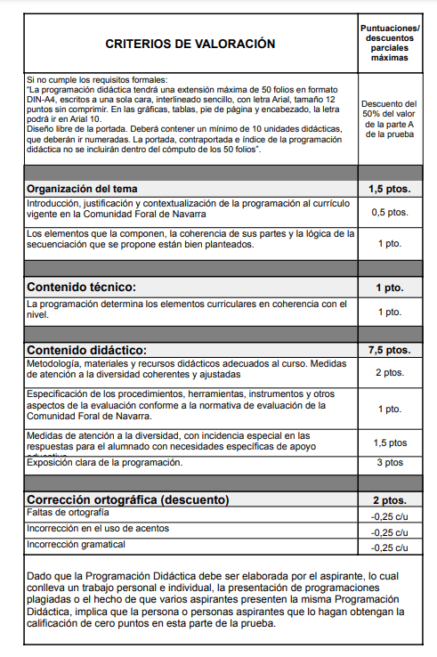

Cómo preparar la programación didáctica de tu oposición en 10 pasos
Para conseguir la plaza en las oposiciones, necesitas aprobar la parte de la programación y la unidad didáctica. Así que quiero compartir contigo los 10 pasos que debes seguir para aprobar esa segunda parte de las oposiciones y conseguir la tan ansiada plaza.
1. Saber qué tienes que hacer
El primer paso es informarte bien para saber qué tienes que hacer. Por supuesto, debes informarte de cómo funcionan las oposiciones, las ponderaciones de cada prueba, etc. Pero más allá, debes saber qué tienes que hacer en la programación didáctica. Aunque parezca una obviedad, me he encontrado con programaciones que no cumplen con los requisitos de los tribunales. Por ejemplo, si piden un formato A4 con márgenes de 2cm, hay programaciones que, por falta de espacio, reducen los márgenes a 1cm o menos. Es un gran error y va a tener una consecuencia clara: menos puntos en la nota final.
¿Cómo evitamos perder puntos? Leyendo en la convocatoria el apartado que habla de la programación didáctica. En algunas comunidades se extenderán más y en otras darán menos requisitos. En cualquier caso, debes cumplirlos todos.
Además, cuando se acercan las oposiciones, los tribunales publican las rúbricas de calificación. Son todos los aspectos que van a valorar de tu programación, con su calificación máxima al lado. Por ejemplo, «claridad en la exposición. 1 punto». También pueden añadir criterios que resten, como las faltas de ortografía o la falta de originalidad (que supone un 0).

2. Saber qué es una programación didáctica
Tan importante es saber qué hacer como qué es una programación didáctica, porque debes saber lo que estás haciendo. Más allá de ser un documento burocrático o un trámite en las oposiciones, la programación didáctica tiene su propio funcionamiento y su por qué. Así que asegúrate completar este paso para poder pasar al siguiente.
3. Entender la programación al 100%
Cuando sabes qué es la programación didáctica podrás entenderla bien: cuáles son sus partes, qué elementos debes incluir, qué perspectiva le tienes que dar, cómo gestionar el tiempo y el espacio,… Para ello, reflexiona sobre la programación y las unidades didácticas hasta que tengan sentido para ti. Una vez que entiendas la programación, podrás ponerte a escribir con seguridad y confianza.
4. Tener las ideas claras
Precisamente para poder redactar tu programación didáctica con seguridad y confianza necesitas tener las ideas claras. Y no solo me refiero a las ideas sobre la programación, sino que también tengas tus propias ideas. Piensa dónde vas a contextualizar tu programación, qué asignatura vas a programar, cómo es tu grupo de alumnos, qué metodologías vas a usar, cómo vas a enseñar para que tus alumnos aprendan,…
Puedes redactar borradores si lo necesitas antes de ponerte con la programación como tal, porque al principio es normal formarse un lío en la cabeza. Pero ¿sabes cómo se sale de ahí? Pensando, redactando, haciéndote preguntas,… Hasta que despejes todas tus dudas y puedas ver cada apartado de la programación con mayor claridad.
5. Ir paso a paso
Como se suele decir, ve «despacito y con buena letra». No quieras abarcar más de lo que puedes. No quieras hacer la programación en una semana. Permítete un tiempo de adaptación para cumplir con los pasos anteriores y luego, sigue igual. La programación didáctica tiene muchos apartados, unos más cortos y otros más largos. Empieza con la introducción, luego el contexto, luego los objetivos,… poco a poco, apartado por apartado hasta que llegues al final.
6. Del borrador a la versión final
Durante este proceso, no te preocupes si lo que escribes no te gusta o si aún quedan algunas partes que completar,… Lo importante es avanzar. Ten claro que la primera versión que escribas de tu programación didáctica no va a ser la última (ni mucho menos). Es lo normal con cualquier documento escrito. La primera versión siempre va a ser mala. Sigue trabajando en ello, rellenando información, recortando lo que no sea necesario, corrigiendo,… hasta llegar a la versión final, que puede ser la versión 20 o la 50.
7. Explicar tu propuesta
Este paso es mi favorito, porque te ayuda con todos los demás. Cuando tengas ideas nuevas sobre tu programación, cuéntaselas a alguien. Te ayudará a entender mejor esas ideas y a desarrollarlas con claridad. Asimismo, cuando estés escribiendo, corrigiendo, retocando o en cualquier momento, explícale tu programación a algún amigo o familiar, aunque no les importe.
Con este sencillo paso, aprenderás a explicar lo complejo de manera sencilla, porque, si ese amigo o familiar que no tiene ni idea de la programación te ha podido seguir, al tribunal le quedará clarísima tu propuesta. En definitiva, es una forma de ir practicando para la exposición oral.
8. Resolver tus dudas
Mientras estés trabajando en tu programación, te surgirán dudas (a veces unas pocas y a veces muchas). Compártelas con alguien, ya sean otros opositores o preparadores. Muchas veces una duda que te bloquea se resuelve con un par de líneas en un mail o con una tutoría y, al deshacer ese bloqueo, puedes seguir avanzando en tu programación didáctica con nuevas energías. Así que, por favor, no te quedes con dudas; pregunta.
Ponte en contacto
Agendar una tutoría
9. Ensayar. Ensayar. Ensayar
Este paso enlaza con el 7. Cuando aún no tienes tu discurso listo, debes explicar las ideas que tengas en la cabeza, tratando de darles un orden para entenderte y que te entiendas. Pero cuando ya tienes la programación terminada, es hora de ponerse con la exposición oral. Y para esta parte, la clave está aquí, en ensayar tantas veces como puedas. Hazlo delante de un espejo, de una cámara o de amigos para tener feedback y poder ir mejorando progresivamente.
Si quieres ir sobre seguro y tener una retroalimentación profesional, prepara conmigo la defensa en tutorías.
10. Corregir
Antes de entregar la programación al tribunal te recomiendo corregirla para asegurarte de que cumple con todos los requisitos de la convocatoria y del tribunal, para ofrecer la mejor versión posible. Un documento genérico lo puede presentar cualquiera, pero las programaciones que llevan a una buena nota e incluso a la plaza son aquellas que se preparan con estrategia, como estás haciendo, pero además deben estar bien redactas, estructuradas, ser coherentes y tener una propuesta sólida. Esto es difícil verlo cuando estás sumergido/a en la propia redacción de la programación. Una visión externa ayuda mucho a saber si la propuesta se entiende y está bien estructurada.
Ve a por el 10


Hola.que precio tiene la corrección de la programación.gracias
Depende de lo que necesites: https://programacionesdidacticasvirgula.com/producto/ticket-de-correccion/